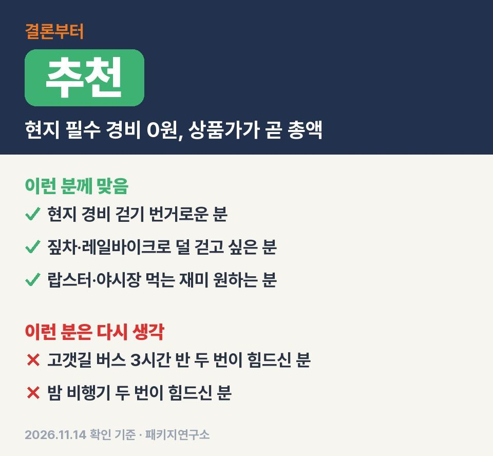
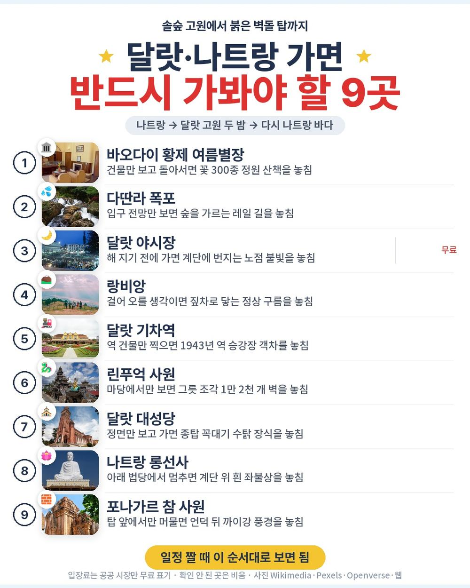
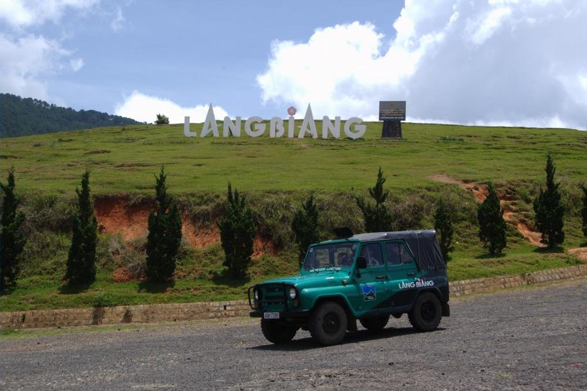
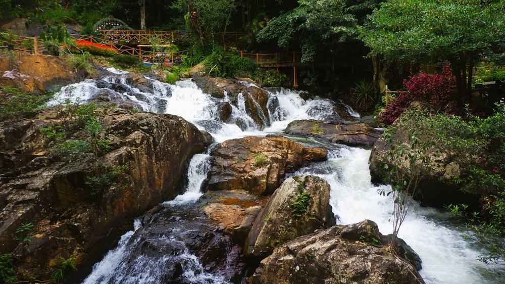
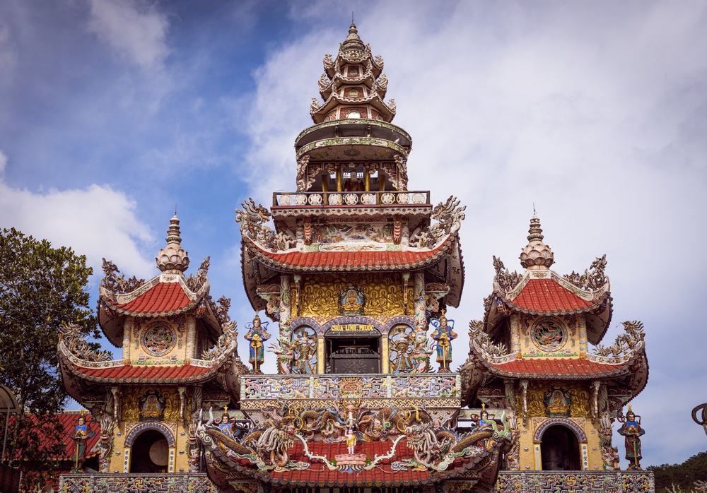

나트랑·달랏 상품은 보통 가이드 경비를 현지에서 따로 걷는데, 이 상품은 그 돈이 이미 값 안에 들어 있고 선택관광 목록 자체가 없음. 그러니 64만 9천원이 거의 그대로 최종 금액이 되는 구조임.
직접 다녀온 후기가 아니라, 일정표와 포함·불포함 원문을 한 줄씩 대조해서 따져 본 글임.
결론 — 추천. 파라타항공 직항, 호텔 4박, 식사 12회, 가이드·기사 경비, 다딴라 레일바이크·랑비앙 짚차·마사지 60분까지 64만 9천원 안에 있음. 다만 고갯길 버스 3시간 반을 두 번 타기 힘드신 분은 맞지 않음.

오늘 기준 출발일별 요금 보기
https://naver.me/Gxr0TOS2

| 항목 | 내용 |
|---|---|
| 가격 | 1인 649,000원 (성인 · 11월 출발 기준) · 2인 1,298,000원 |
| 여행사 | 노랑풍선 |
| 항공 | 파라타항공 직항 (WE205·WE206) · 갈 때 20:35 출발 00:10 도착 / 올 때 01:10 출발 07:55 도착 · 각 약 5시간 |
| 숙소 | 4박 · 나트랑 1박 + 달랏 2박(같은 호텔) + 나트랑 1박 · 예정 호텔 또는 동급 · 2인 1실 |
| 일정 | 4박 6일 · 식사 12회 · 가이드·기사 경비 포함 · 선택관광 없음 · 쇼핑 3회 · 최소 4명 |
▶ 내 출발일 오늘 기준 요금 확인 (제휴 링크 · 예약 시 수수료를 받으며 가격은 같습니다)
▶ 11월 14일 기준 나트랑 패키지 최저 39만 9천원부터 — 출발일별 값 한 화면에: 비교 페이지
| 번호 | 내용 | 한 줄 답 |
|---|---|---|
| 1 | 이 값에 들어 있는 것 | 경비까지 포함 |
| 2 | 현장에서 더 낼 돈 | 매너팁 정도 |
| 3 | 일정과 체력 | 버스 3시간 반 2번 |
| 4 | 자유여행으로 짜면 | 항공 빼면 21만원대 |
| 5 | 맞는 분 · 안 맞는 분 | 3 대 3 |
가이드·기사 경비와 체험 셋(레일바이크·짚차·마사지)이 값 안에 들어 있다는 게 핵심임.

- 항공: 파라타항공 인천–깜란 직항 왕복, 유류할증료·세금 포함
- 숙소: 호텔 4박, 달랏 두 밤은 같은 호텔이라 짐 한 번만 풂
- 식사: 12회 — 낌자식당 해물 샤브샤브, 안하우스 푸동 분짜·반쎄오, 한식 3번, 응온갤러리 랍스터 무제한
- 체험: 다딴라 레일바이크, 랑비앙 짚차 또는 7인승, 전신 마사지 60분, 달랏 야시장 반짱느엉+1잔
- 그 밖: 나트랑 야간 시티투어(야시장·혼총곶·피자+맥주 또는 음료), 객실당 달랏 와인 1병, 여행자보험

선택관광이 아예 없어서 일행이 둘로 갈라져 기다리는 시간이 안 생김. 호텔은 나트랑이 빈펄 비치프론트·베스트웨스턴 프리미어 하바나, 달랏이 멀펄·달랏 팰리스 헤리티지·에덴시 레이크·라달랏 중 배정되고 출발 2~3일 전 안내됨.
꼭 내야 하는 현지 경비가 0원이라 상품가가 거의 최종 금액임.
| 항목 | 금액 | 필수/선택 | 비고 |
|---|---|---|---|
| 가이드·기사 경비 | 0원 | — | 상품가에 포함 |
| 선택관광 | 0원 | — | 선택관광 없음 |
| 매너팁 | 자율 | 선택 | 마사지 팁 등, 원문 안내 2~4달러 관례 |
| 쇼핑 | 0원 | — | 3곳 들르지만 안 사도 됨 |
| 합계 (2인 필수분) | 0원 | 2인 총액 = 상품가 1,298,000원 |
- 2인 총액: 129만 8천원, 1인 64만 9천원 그대로
- 혼자 쓰면 싱글룸 사용료 25만원 추가
- 물값·간식 같은 개인 경비는 별도
힘든 날은 고갯길 버스를 타는 2일차와 4일차, 나머지는 시내 이동이라 짧음.
| 일차 | 가는 곳 | 버스 | 걷기 | 점심 · 저녁 |
|---|---|---|---|---|
| DAY 1 | 인천 20:35 출발 → 깜란 00:10 도착 → 호텔 | 약 40분 | 적음 | — · — |
| DAY 2 | 달랏 이동 → 바오다이 별장 → 죽림사 → 다딴라 레일바이크 → 마사지 → 야시장 | 약 4시간 30분 | 보통 | 해물 샤브샤브 · 현지식 |
| DAY 3 | 랑비앙 짚차 → 달랏 기차역 → 린푸억 사원 → 달랏 대성당 | 약 1시간 30분 | 보통 | 분짜·반쎄오 · 한식 |
| DAY 4 | 플라워 가든 → 나트랑 이동 → 쇼핑 3곳 → 롱선사 → 포나가르 → 야간 시티투어 | 약 5시간 | 보통 | 한식 · 랍스터 무제한 |
| DAY 5 | 자유시간 → 예르생 박물관 → 침향탑 → 공항 | 약 1시간 | 적음 | 현지식 · 한식 |
| DAY 6 | 깜란 01:10 출발 → 인천 07:55 도착 | — | 적음 | — · — |
- 버스: 나트랑↔달랏 고갯길 약 3시간 30분이 2일차·4일차 두 번
- 걷기: 랑비앙은 차로 오르고 다딴라는 레일바이크로 내려가서 오르막 걷기가 적음
- 밤 비행기: 갈 때 자정 넘어 도착, 올 때 새벽 1시 10분 출발

이 상품 후기에도 산길 이동이 길어서 멀미약을 챙기라는 말이 두 번 나옴. 달랏은 일 년 내내 봄 날씨라 아침저녁이 쌀쌀하니 얇은 겉옷 하나는 버스 가방에 넣어 두면 편함.
이 상품 조건 한눈에 (출발일 달력·두 분 값·비슷한 상품과 비교)
https://pkg-lab.com/pkg/AVP7230WE01/?utm_source=ghpages&utm_medium=post&utm_campaign=daily
같은 목적지 다른 여행사 패키지, 쇼핑·선택관광·가이드 경비까지 비교
https://pkg-lab.com/dest/NHA/m/2026-11/?utm_source=ghpages&utm_medium=post&utm_campaign=daily
항공권만 43만원 선이라 남는 21만 9천원에 숙박·식사·가이드·체험이 다 들어간 셈임.
| 항목 | 금액 | 근거 |
|---|---|---|
| 인천–깜란 왕복 항공 | 약 430,000원 | 2026-11-02 마이리얼트립 조회, 두 달 직항 운임 하위 25% (11/14 조회는 실패) |
| 패키지에서 항공 뺀 값 | 219,000원 | 649,000원 − 430,000원 |
| 식사 | 따로 | 패키지는 12회 포함 |
| 공항 이동 | 택시·그랩 | 패키지는 전용 버스 |
| 여행자보험 | 따로 가입 | 패키지는 포함 |
| 가이드 | 없음 | 패키지는 한국어 가이드 + 경비 포함 |
| 합계 | 항공만 43만원 선 | 호텔 4박·식사·달랏 왕복 차량은 별도 |
- 패키지: 항공 외 21만 9천원으로 4박·식사 12회·달랏 왕복 버스·입장료·레일바이크·짚차·마사지까지
- 자유여행: 나트랑↔달랏 차량과 랑비앙 짚차를 따로 잡아야 함
패키지가 덜 듦 — 항공권 값을 빼고 남는 돈으로 호텔 네 밤도 잡기 빠듯함. 대신 자유여행이면 나트랑 바다에서 쉬는 시간을 더 길게 가져갈 수 있음.
현지 경비 신경 쓰기 싫고 덜 걷고 싶은 분께 맞고, 긴 버스가 힘든 분께는 안 맞음.
| 맞는 분 | 안 맞는 분 |
|---|---|
| 현지에서 경비 걷는 게 번거로운 분 | 밤 비행기 두 번이 힘드신 분 |
| 짚차·레일바이크로 덜 걷고 싶은 분 | 고갯길 버스 3시간 반이 힘드신 분 |
| 랍스터·야시장 등 먹는 재미를 원하는 분 | 쇼핑센터 방문 자체가 싫으신 분 |
이 상품 게시판 후기는 63개, 평균 4.0점이고 「객실이 깨끗해요」를 고른 사람이 34명으로 제일 많음. 랍스터 뷔페와 랑비앙 지프 전망이 좋았다는 후기가 있음. 반대로 노옵션이라도 쇼핑 권유가 있었다는 후기도 두 건 있어서 쇼핑센터에선 안 사도 된다는 마음으로 가면 됨.
Q. 나트랑 패키지 가격에 가이드 경비도 들어 있나요?
A. 이 상품은 들어 있음. 포함 항목에 가이드/기사 경비가 있음. 마사지 같은 곳의 매너팁만 자율임.
Q. 나트랑 패키지 쇼핑은 몇 번 가나요?
A. 3회임. 침향&노니, 커피, 잡화 매장이고 각 약 1시간, 구매는 자유임.
Q. 나트랑 패키지 노쇼핑 상품인가요?
A. 노쇼핑은 아님. 대신 선택관광이 하나도 없는 노옵션 상품이고 다딴라 레일바이크도 일정에 포함됨.
부모님이 현지에서 지갑 꺼낼 일을 줄이고 달랏 고원까지 편하게 보시게 하고 싶을 때 맞는 상품임. 고갯길 버스 두 번만 괜찮으면 64만 9천원이 거의 마지막 금액이라 계산이 단순함.
오늘 기준 출발일별 요금 보기
https://naver.me/Gxr0TOS2
이 글에는 네이버 제휴 링크가 포함되어 있으며, 링크를 통해 예약하시면 일정 수수료를 받습니다. 가격은 동일합니다. 가격과 구성은 2026년 11월 14일 확인 기준이며 출발일에 따라 달라질 수 있습니다.
▶ 이 상품, 영상으로 보기 (유튜브)
▶ 나트랑 패키지 오늘 값 나란히 비교
▶ 같은 목적지 다른 여행사 패키지, 쇼핑·선택관광·가이드 경비까지 비교: pkg-lab.com

.jpg){kind=link}


.jpg){kind=link}